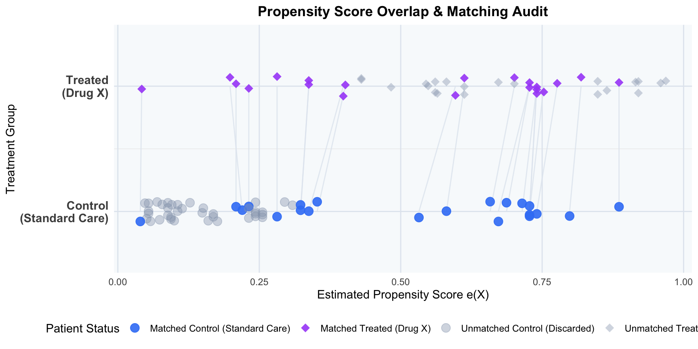

The NICE RWE Framework outlines three core principles for generating high-quality RWE:
Data Suitability: Ensuring data provenance, quality, and relevance (using tools like DataSAT).
Study Transparency: Pre-registering study protocols, publishing analytical code, and outlining patient attrition flow.
Methodological Rigor: Utilizing analytical designs that minimize risk of bias (e.g., active comparators, new-user designs) and thoroughly characterizing unmeasured confounding (e.g., via E-value sensitivity analysis).
1 The Confounding by Indication Problem
In clinical practice, treatment allocation is not randomized. Physicians prescribe therapies based on clinical need, prognosis, and patient severity. When a new, highly effective, or last-line therapy is introduced, it is systematically reserved for the sickest, oldest, and most fragile patients.
This treatment assignment mechanism creates Confounding by Indication (or Indication Bias):
The treatment group (\(D = 1\)) is pre-selected to have a worse prognosis at baseline.
The comparator group (\(D = 0\)) is pre-selected to have a better prognosis.
Consequently, a naive comparison of raw outcomes will show the new drug underperforming (a “False Failure”), even if it is clinically superior.
2 Analytical Scenario: Oncology Drug X vs. Standard Care
To illustrate, consider a retrospective cohort study evaluating a new high-cost oncology Drug X (\(D = 1\)) against the historical Standard of Care (\(D = 0\)).
Confounders (\(X\)):
Age (continuous variable; older age increases hazard of death).
The cohort of 100 patients is simulated in R using a fixed seed to ensure reproducibility. The following code chunk initializes the baseline demographic and clinical characteristics, along with the survival times:
R Code
# Set seed for reproducibilityset.seed(46)n <-100# Generate confoundersage <-round(rnorm(n, mean =65, sd =8))ecog <-rbinom(n, size =3, prob =0.4)# Propensity score model with selection biaslogit_ps <--7.5+0.08* age +1.2* ecogps <-1/ (1+exp(-logit_ps))treatment <-rbinom(n, size =1, prob = ps)# Outcome model (Survival time in months)survival <-round(42+5.0* treatment -0.45* age -6.0* ecog +rnorm(n, mean =0, sd =1.5))survival[survival <1] <-1cohort <-data.frame(patient_id =1:n,age = age,ecog = ecog,treatment = treatment,survival = survival)
Instead of displaying all 100 individual patient records, the baseline demographic and clinical characteristics of the cohort are summarized below. This table represents the starting raw dataset generated for this causal analysis:
The crude analysis incorrectly concludes that Drug X reduces survival by 2.55 months. A HTA submission based on this raw comparison would result in immediate rejection.
3 Baseline Audit: Quantifying Imbalance
The naive analysis is highly misleading because it assumes the treatment and control cohorts are comparable at baseline. To determine whether a naive comparison is valid, we must measure the distance between the covariate distributions of the two groups.
This is achieved using the Standardized Mean Difference (SMD). The SMD quantifies the magnitude of difference between two groups on a standardized scale, which directly reflects the degree of overlap between their distributions.
When the SMD is small, the two groups have substantial overlap and are comparable. However, when the SMD is large (typically exceeding the standard threshold of 0.1), the distributions diverge significantly. A large SMD indicates that the baseline imbalance is severe enough to invalidate any naive comparison, rendering the crude analysis biased and making causal adjustment (e.g., matching or weighting) mandatory.
3.1 The Mathematical Derivation of SMD
For a continuous or binary covariate, the SMD is the difference in means scaled by the pooled standard deviation within the groups. The pooled standard deviation \(s_{\text{pooled}}\) integrates the within-group variation from both cohorts, preventing treatment-related differences in means from inflating the scale factor. To calculate \(s_{\text{pooled}}\), we evaluate the group-specific sample variances \(s_g^2\) (for \(g \in \{0, 1\}\)).
Each \(s_g^2\) represents the unbiased sample variance of the covariate within treatment group \(g\), reflecting the spread of characteristics around the respective group mean \(\bar{X}_g\). Here, \(s_1^2\) and \(s_0^2\) are the group-specific variances computed for the treated (\(g = 1\)) and control (\(g = 0\)) groups, respectively. This ensures the baseline variability is evaluated within each group separately before pooling.
Industry Balance Benchmarks
SMD Value
Balance Status
HTA Implications
SMD < 0.1
Group Balance Achieved
Highly comparable cohorts; standard threshold accepted by NICE/HTA guidelines.
0.1 \(\le\) SMD < 0.2
Marginal Imbalance
Minor baseline discrepancy; potential for residual confounding.
SMD \(\ge\) 0.2
Severe Imbalance
Covariates are significantly unbalanced; adjustment via matching, weighting, or regression is mandatory.
3.2 Why P-Values Fail as Balance Metrics
A common error in retrospective studies is conducting hypothesis tests (e.g., two-sample \(t\)-tests for continuous covariates like Age, or chi-squared tests for categorical covariates like ECOG) on each baseline covariate between the treatment and control groups before adjustment, using the resulting \(p\)-value to assess whether the cohorts have sufficient distribution overlap (balance).
HTA guidelines (NICE, FDA, ISPOR) reject this practice because using \(p\)-values to evaluate baseline overlap is conceptually and mathematically incorrect:
Logical Redundancy (Incorrect Null Hypothesis): A hypothesis test evaluates whether the two samples are randomly drawn from a single shared parent population. In observational data, treatment assignment is systematically non-random (due to confounding by indication). Since we already know the cohorts do not come from the same population, testing this null hypothesis is logically redundant.
Failure to Measure Overlap (Sample Size Dependency): A \(p\)-value does not measure the magnitude of distribution overlap or similarity between the groups; it is heavily determined by sample size (\(N\)). In large electronic health records (\(N > 10,000\)), even if the overlap is nearly perfect and the difference is clinically negligible, the \(p\)-value will be highly significant (\(p < 0.05\)). Conversely, in small cohorts (e.g., \(N = 10\)), even if the cohorts have zero overlap, the \(p\)-value can easily be non-significant (\(p > 0.05\)), failing to detect severe imbalance.
Lack of Standardized Scale: Unlike \(p\)-values, the Standardized Mean Difference (SMD) is sample-size invariant. It directly measures the distance between distributions in standard deviation units, allowing direct comparison of balance across covariates of different units and scales (e.g., Age in years versus ECOG scores).
4 Propensity Score Theory & Estimation
From Imbalance to Causal Adjustment: The Role of Propensity Scores
The baseline audit using SMDs reveals a fundamental challenge: our treatment and control cohorts are highly unbalanced (e.g., older, sicker patients are systematically channeled into the Drug X group). To resolve this sample imbalance, we must reconstruct a balanced clinical scenario where the treatment and control groups have comparable baseline characteristics—mimicking the balance achieved in a randomized controlled trial (RCT).
To achieve this group comparability, we must adjust for the confounding covariates (Age and ECOG). Why do we need the Propensity Score as the tool to achieve this balance, rather than simply matching patients directly on their covariates?
The Curse of Dimensionality in Multi-Dimensional Balance: In real-world HEOR studies, we typically control for dozens of baseline confounders (e.g., demographics, comorbidities, clinical markers, and prior therapies). If we attempt to find matches with the exact same combination of all baseline covariates (Exact Matching), the probability of finding a match drops to near zero as the number of covariates increases. This results in the exclusion of most patients, severely reducing sample size and statistical power.
Propensity Score as a Dimensionality Reduction Tool: Rosenbaum and Rubin (1983) proved that the propensity score—the conditional probability of receiving treatment given baseline covariates, \(e(X) = P(D = 1 \mid X)\)—is a balancing score. Conditionally on the propensity score, the distribution of all baseline covariates is mathematically guaranteed to be independent of treatment assignment.
By matching or weighting on this single, one-dimensional score, we collapse the high-dimensional covariate imbalance into a single dimension. This ensures that the multi-dimensional covariate distributions are balanced between groups without suffering from the severe sample attrition associated with exact matching.
4.1 The Logistic Propensity Model
The propensity score is the conditional probability of receiving treatment given baseline covariates: \(e(X) = P(D = 1 \mid X)\). We estimate this probability using a logistic regression model:
A patient with a high score (e.g., \(e(X) = 0.95\)) has characteristics that make them highly likely to receive the new drug under clinical practice guidelines.
5 Propensity Score Matching & The Common Support Constraint
The Mechanics of Propensity Score Matching (PSM)
Once we have estimated a propensity score for every patient, we use these scores to pair treated patients with control patients. The goal is to construct a matched sample where the distribution of propensity scores—and thus the distribution of all baseline covariates—is identical between the groups. Under normal conditions (where the distributions overlap), matching is executed using specific algorithmic parameters:
Nearest Neighbor (NN) Matching: The most common algorithm. For each treated patient, the algorithm searches the control pool and selects the patient whose propensity score is closest.
Caliper Width Constraint: Simply matching the “nearest” neighbor can result in poor matches if the closest control is still very different. To prevent this, we enforce a caliper—a maximum allowable difference between matched propensity scores. A standard industry recommendation (Rosenbaum and Rubin, 1985) is to use a caliper of 0.2 times the standard deviation of the logit of the propensity score: \[\text{Caliper} = 0.2 \times \sigma_{\text{logit}(e(X))}\] If a treated patient has no control patient within this caliper distance, they remain unmatched and are excluded from the final cohort.
Matching Ratios (1:1 vs. 1:k):
1:1 Matching: Each treated patient is matched to exactly one control. This minimizes bias because matches are highly similar, but discards data and reduces statistical power.
1:k Matching: Each treated patient is matched to \(k\) controls (e.g., 1:2 or 1:3). This increases sample size and statistical power but can introduce bias as less-optimal matches are accepted.
Replacement Options:
Without Replacement: Once a control patient is matched, they are removed from the pool and cannot be matched again. This is order-dependent but ensures independent observations, making downstream variance and survival calculations straightforward.
With Replacement: A control patient can be matched to multiple treated patients. This reduces bias (controls are always matched to their closest matches) but increases variance and requires complex weighting in downstream analyses.
5.1 The Positivity (Common Support) Assumption
For matching to be methodologically valid, we must satisfy the Positivity Assumption (also known as the Common Support Constraint). This assumption dictates that every patient in the population must have a non-zero probability of receiving either treatment:
\[0 < P(D = 1 \mid X) < 1\]
Graphically, this means that the distribution of propensity scores for the treated and control cohorts must share a region of overlap (common support). If there is no overlap for a certain range of propensity scores, it means patients in that range can only receive one treatment but not the other under clinical practice, making comparison impossible.
When the positivity assumption is violated (i.e., there is a lack of common support), matching fails because we cannot find comparable individuals. In real-world HTA audits, a lack of common support is handled as follows:
Partial Lack of Overlap: Resolved by Trimming (excluding patients whose propensity scores lie outside the overlap region). HTA Caveat: Trimming changes the target population and limits the generalizability (external validity) of the findings, which must be explicitly declared and justified in HTA submissions.
Complete Separation (Zero Overlap): The treatment effect is mathematically unestimable because the covariate distributions of the treated and control cohorts do not overlap at all. In this scenario, researchers must source a more comparable control arm (e.g., from another database), broaden the study eligibility criteria, or pivot to a single-arm evaluation compared against natural history data.
Post-Matching Analysis Workflow: Estimating the Treatment Effect
Once the matching process successfully pairs treated and control patients, the analysis enters the downstream estimation phase. The workflow consists of three mandatory steps to ensure methodological validity:
Re-Audit Covariate Balance: We calculate the Standardized Mean Difference (SMD) for all covariates in the matched cohort. If all SMDs are successfully reduced below the 0.1 threshold, the baseline imbalance is resolved, and we can proceed to outcome analysis.
Estimate the Target Causal Effect (ATT): Because we matched control patients to our treated cohort, the target estimand is the Average Treatment Effect on the Treated (ATT). We estimate this by directly comparing the outcomes of the matched groups:
For continuous outcomes: The difference in means between the matched treated and matched control groups (e.g., mean survival difference).
For time-to-event outcomes (HTA standard): Plotting matched Kaplan-Meier curves and fitting a Cox Proportional Hazards model on the matched cohort to obtain the Hazard Ratio (HR).
Adjust Statistical Inference for Matching: Matching introduces statistical dependence between the paired individuals. Therefore, standard errors, p-values, and confidence intervals must be adjusted to account for this clustering (e.g., using robust standard errors clustered on the matched pairs, or stratification in the survival model).
6 R Implementation: Quantitative Audit & Modeling Pipeline
The following R code constructs our overlapping observational cohort (N = 100), manually calculates the baseline SMDs to audit covariate imbalance, estimates propensity scores using logistic regression, implements a manual nearest-neighbor matching algorithm with a caliper constraint, and estimates the causal treatment effect.
6.1 Step 1: Initialize Cohort and Baseline Balance Audit
First, we set up the cohort and calculate the Standardized Mean Difference (SMD) for both covariates (age and ecog) to quantify baseline imbalance.
We fit a logistic regression model predicting treatment assignment (D) based on Age and ECOG performance status. The predicted probabilities are our estimated propensity scores.
R Code
# 1. Fit Propensity Score Modellogit_model <-glm(treatment ~ age + ecog, data = cohort, family =binomial(link ="logit"))cohort$propensity_score <-predict(logit_model, type ="response")cohort$logit_ps <-predict(logit_model, type ="link")# Display first 5 rows for clarity and concisenesskable(head(cohort[, c("patient_id", "treatment", "age", "ecog", "survival", "propensity_score", "logit_ps")], 5), digits =3, caption ="Estimated Propensity Scores and Logits (First 5 Patients Shown)",col.names =c("Patient ID", "Treatment (D)", "Age", "ECOG", "Survival Months", "Propensity Score", "Logit PS"))
Estimated Propensity Scores and Logits (First 5 Patients Shown)
Patient ID
Treatment (D)
Age
ECOG
Survival Months
Propensity Score
Logit PS
1
0
58
0
15
0.048
-2.989
2
0
67
2
1
0.687
0.786
3
1
59
3
1
0.864
1.852
4
1
75
1
6
0.430
-0.280
5
1
74
2
1
0.777
1.246
6.3 Step 3: Nearest-Neighbor Matching with Caliper Constraint
We implement a manual nearest-neighbor matching algorithm. We match treated patients to available controls on the logit of the propensity score, applying a caliper constraint of 0.2 times the standard deviation of logit(e(X)).
We compile the matched sample, re-audit the covariate balance, and calculate the causal treatment effect (mean survival difference) on the matched cohort.
6.5 Step 5: Visualize Propensity Score Overlap (Common Support Verification)
To verify the positivity assumption (common support) and audit the matching process, we visualize the individual estimated propensity scores for each patient as points on parallel treatment tracks (diamonds for treated patients, circles for control patients), drawing connection segments between matched pairs. Patients who fell outside the caliper or lacked overlap are faded out as grey shapes, clearly demonstrating how matching prunes the extremes to restore common support.
R Code
library(ggplot2)# 1. Identify matched indicatorcohort$matched <-ifelse(cohort$patient_id %in%c(matched_pairs$treated_id, matched_pairs$control_id), "Matched", "Unmatched (Discarded)")# 2. Add status indicator combining treatment and matchingcohort$status <-ifelse( cohort$matched =="Matched",ifelse(cohort$treatment ==1, "Matched Treated (Drug X)", "Matched Control (Standard Care)"),ifelse(cohort$treatment ==1, "Unmatched Treated (Discarded)", "Unmatched Control (Discarded)"))# 3. Create segments data linking matched pairssegments_data <-data.frame(x = matched_pairs$treated_ps,y =2,xend = matched_pairs$control_ps,yend =1)# 4. Generate the parallel track point plotggplot() +# Draw segment lines first so they sit behind pointsgeom_segment(data = segments_data, aes(x = x, y = y, xend = xend, yend = yend),color ="#e2e8f0", linewidth =0.5, alpha =0.8) +# Plot points for cohortgeom_point(data = cohort, aes(x = propensity_score, y = treatment +1, color = status, shape = status, alpha = status),size =3.5, position =position_jitter(width =0, height =0.08, seed =42)) +scale_y_continuous(breaks =c(1, 2),labels =c("Control\n(Standard Care)", "Treated\n(Drug X)"),limits =c(0.6, 2.4) ) +scale_color_manual(values =c("Matched Treated (Drug X)"="#a855f7","Matched Control (Standard Care)"="#3b82f6","Unmatched Treated (Discarded)"="#94a3b8","Unmatched Control (Discarded)"="#94a3b8" ),name ="Patient Status" ) +scale_shape_manual(values =c("Matched Treated (Drug X)"=18, # Diamond for Treated"Matched Control (Standard Care)"=19, # Circle for Control"Unmatched Treated (Discarded)"=18, # Diamond for Treated"Unmatched Control (Discarded)"=19# Circle for Control ),name ="Patient Status" ) +scale_alpha_manual(values =c("Matched Treated (Drug X)"=0.9,"Matched Control (Standard Care)"=0.9,"Unmatched Treated (Discarded)"=0.4,"Unmatched Control (Discarded)"=0.4 ),name ="Patient Status" ) +labs(title ="Propensity Score Overlap & Matching Audit",x ="Estimated Propensity Score e(X)",y ="Treatment Group" ) +theme_minimal(base_size =11) +theme(legend.position ="bottom",plot.title =element_text(face ="bold", size =13, hjust =0.5),panel.background =element_rect(fill ="#f8fafc", color =NA),panel.grid.major.x =element_line(color ="#e2e8f0"),panel.grid.minor.x =element_blank(),panel.grid.major.y =element_line(color ="#e2e8f0"),axis.text.y =element_text(face ="bold", size =11) )

NoteAttrition Audit: Patients Discarded (Unmatched due to Caliper/Support Violations)
During the matching process, individuals who could not be paired within the caliper boundary were discarded to ensure comparability:
Treated Group (Drug X): 21 patients discarded (out of 42 total treated patients).
Control Group (Standard Care): 37 patients discarded (out of 58 total control patients).
TipMethodological Note: Sample Size vs. Effective Sample Size (ESS)
In causal inference audits, it is important to distinguish how “effective sample size” applies to matching versus weighting:
In Propensity Score Matching (PSM) (this analysis): Because matching here is 1:1 and unweighted (matched patients have weight = 1, unmatched have weight = 0), the effective sample size is simply the count of matched individuals (here, 42). There is no variance inflation from unequal weights.
In Propensity Score Weighting (IPTW) (introduced in later modules): Weights vary continuously, which inflates the variance of the treatment effect estimator. To audit this variance inflation, we calculate the Effective Sample Size (ESS) using the Kish formula: ESS = (sum(w_i))^2 / sum(w_i^2). A low ESS relative to the actual sample size indicates extreme weights and unstable estimates, a key audit check in NICE submissions.
6.6 Methodological Interpretation of the R Output
The analysis reveals the following critical causal inference dynamics:
Baseline Imbalance: Before adjustment, the treated group was significantly older and sicker. The treated mean age was 67 compared to 63.69 for the control group (baseline Age SMD = 0.429, far exceeding the 0.1 threshold). Similarly, the mean ECOG score for the treated group was 1.88 compared to 0.88 for controls (baseline ECOG SMD = 1.296). This baseline disparity represents severe Confounding by Indication.
The Naive False Failure: Due to this confounding, the crude outcome comparison shows that patients on Standard Care lived longer than those on Drug X (Naive Difference = -2.55 months), falsely suggesting that Drug X is inferior.
Propensity Score Dimensionality Reduction: The logistic regression model maps these baseline confounders into a one-dimensional probability score. Sicker, older patients receive higher propensity scores, reflecting their higher probability of treatment under real-world clinical practice.
Caliper Pruning & Common Support Restoration:
Out of the original 42 treated patients, 21 were successfully matched to 21 control patients.
21 treated patients and 37 control patients fell outside the caliper boundary (0.315 on the logit scale) or lacked comparable propensity score overlap and were pruned from the cohort.
Specifically, the sicker, older patients in the treated group (with extremely high propensity scores) and the younger, healthier patients in the control group (with extremely low propensity scores) could not be matched and were excluded, restoring common support.
Baseline Covariate Balance Resolution: In the matched sub-cohort, the SMD for Age falls to 0.083 and for ECOG falls to 0.071. Both SMDs are now below the standard threshold of 0.1, indicating that the matched cohorts are highly comparable.
Causal Truth Revealed (True Success): Comparing survival on the matched cohort reveals that Drug X increases survival by 3.48 months (Matched Difference = +3.48 months). By comparing only comparable patients, we have eliminated the negative selection bias, revealing that the drug is highly effective.